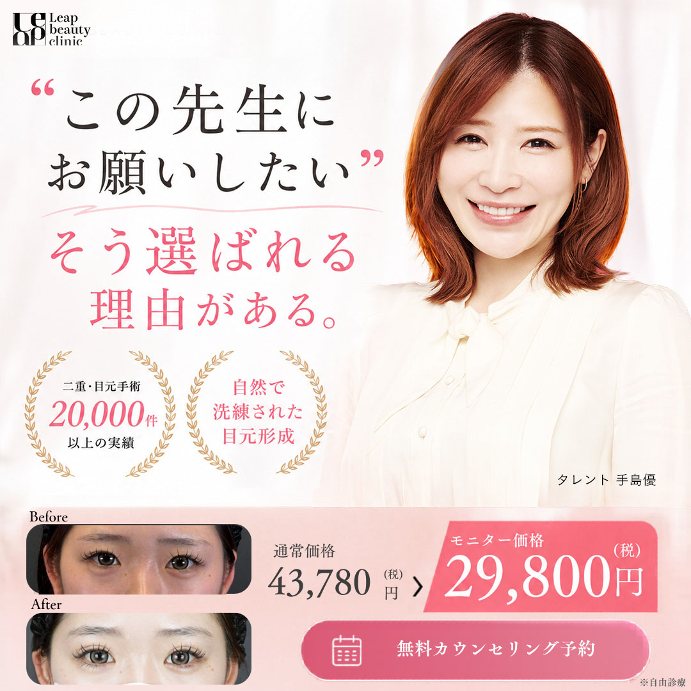
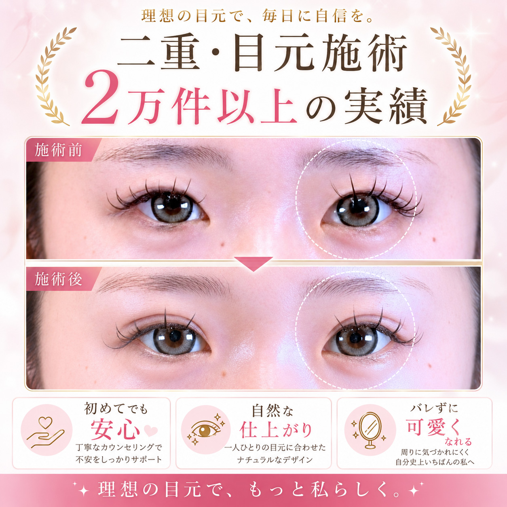
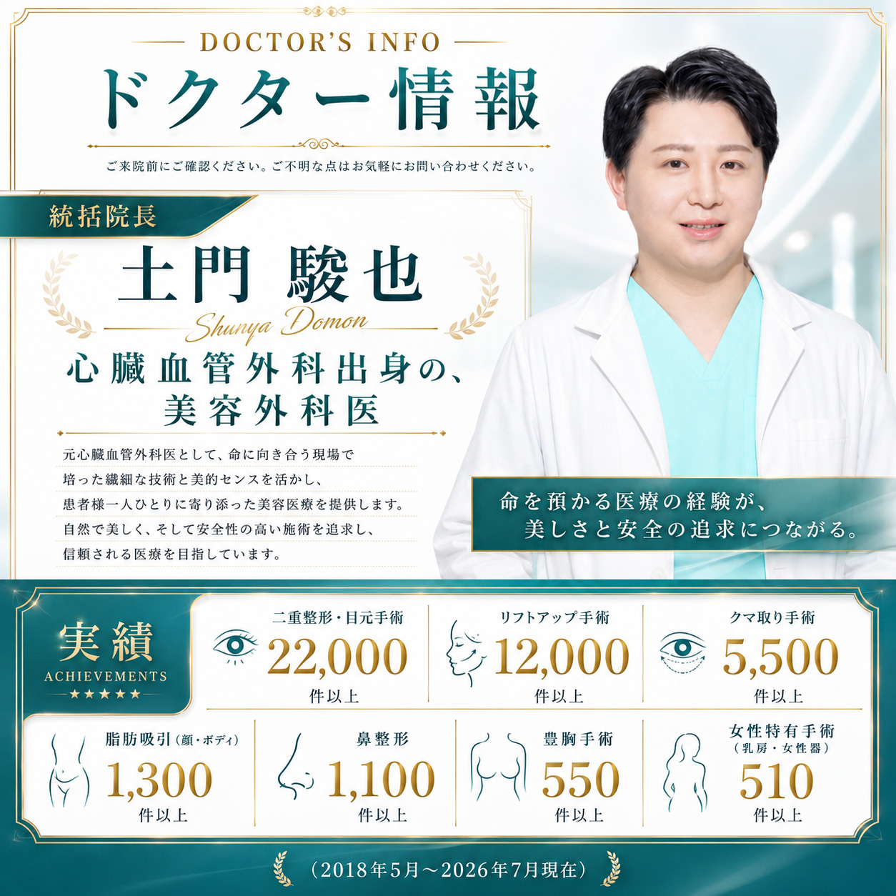
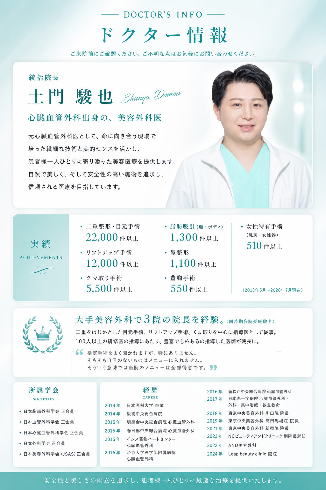
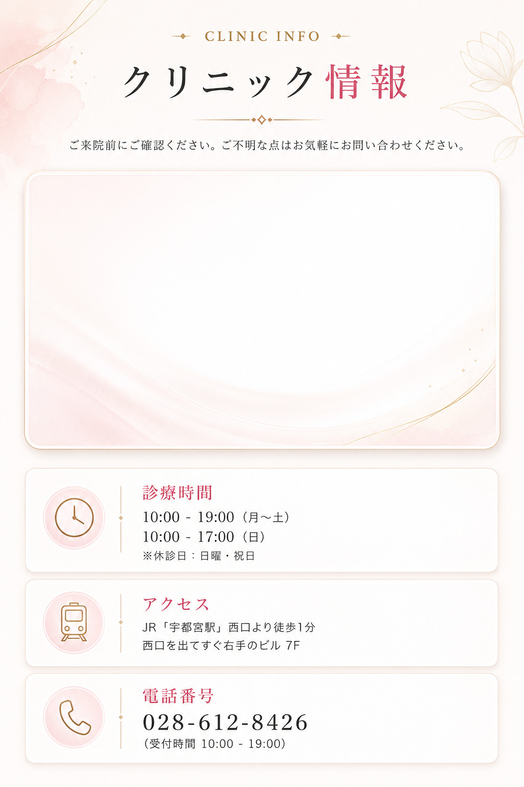

こちらはすべて特別価格でのご案内です。
※モニター様が対象となります。
蒙古襞形成は、目頭切開後に 「目頭が開きすぎた」「目元がきつく見える」「左右差が気になる」「元の印象に近づけたい」 と感じる方に向けた修正施術です。
症例写真や体験談のご協力をいただける方を対象に、
通常料金から20％OFFでご案内いたします。
※モニター条件・募集状況は時期により異なります。
※詳細はカウンセリング時にご確認ください。
湘南美容クリニック仙台院 院長・エリア統括医を歴任。執刀実績15,000件以上。
新規症例だけでなく、数多くの修正症例を経験してきました。経験に基づいた判断のもと、シミュレーションを行いながら、理想と現実のギャップも含めて丁寧にご説明します。
「必要ない」「合わない」と判断した場合は、その理由も含めて、はっきりお伝えします。ご希望を叶えることよりも、その選択が人生にとって本当にプラスかどうかを大切にしているから。
無理に勧めず、納得した上で選んでいただく。人生を預けられるパートナーとして選ばれています。
事前に決めたラインで留めて終わり、ではありません。手術中に糸を留めた状態で確認をし、左右の開き方やラインの見え方を確認しながらその場で細かな微調整を行います。
このこだわりが、違和感のない自然な仕上がりにつながります。
WEB予約フォームまたはお電話・LINEにて、カウンセリングのご予約を承ります。
医師がまぶたの厚み・脂肪の量・目の開きなどを確認し、複数のプランの中から最適な方法をご提案します。
ご希望のラインを確認しながらマーキングを行い、局所麻酔の後、まぶたの内側から糸で固定します。
術後の経過を確認し、メイク再開の目安や注意点をご説明します。気になる点があればいつでもご相談ください。
二重埋没法には、以下のようなリスク・副作用が起こりうる可能性があります。
症状や経過には個人差があります。
気になる症状が長く続く場合は、必ずクリニックまでご連絡ください。

